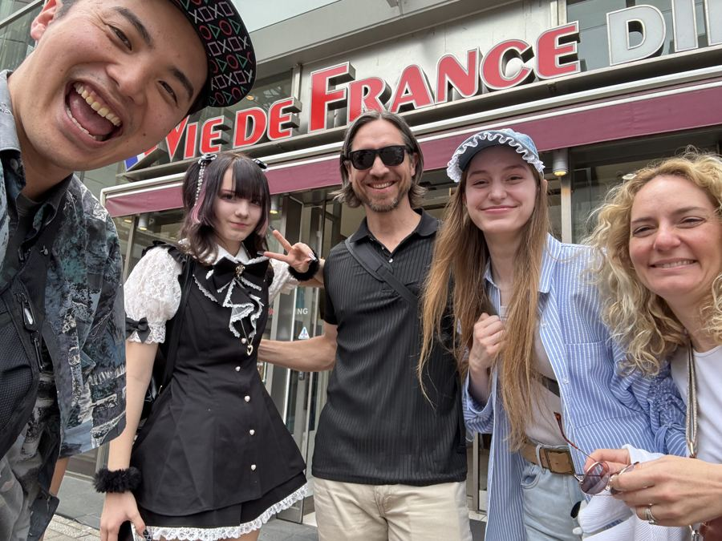
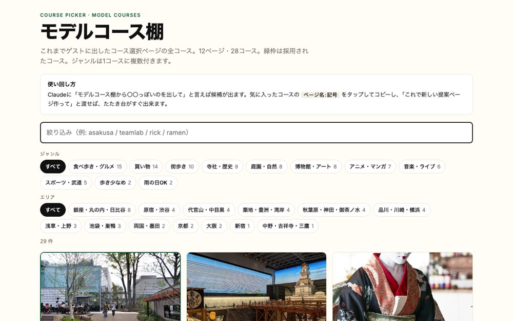

2026.10.07 ランチミーティング ／ 日本橋
Mioさんと話した90分を、決まったこと・やること・すぐ試せるものの順に整理しました。下のメニューで切り替えられます。
01 ／ Mioさんの言葉から
食後にMioさんが挙げた3つを、そのまま柱にします。
企業視察や教育旅行の行程には、必ず自由時間の枠がある。そこにアニメだけでなく、ユウキ側のメニューを「3日なら3日ぶん」選択肢にして出し、お客さん側に選んでもらう。選ばせる形にすると決まりやすい。
Mioさんは今、付き合いの長いお客さんに来年の企画を先回りで提案している。ゴルフや桜の定番に続く最後の1本が「何か面白いこと」。みんながやっているスカイツリーや浅草でなくていい、という前提で、ユニークな体験を候補として渡す。
ユウキが自分のサイトで宿や移動を含む旅程を売るには、旅行業の登録が要る。Mioさんの会社が受け皿になり、数パーセントの手数料で商品を載せる形。儲けるためというより、同じ壁の前にいるガイドが他にもたくさんいるので、その入口にもなる。
02
03
歴史の講釈で目が死ぬより、今の流行りを話せて礼儀のある学生のほうが喜ばれる。よしさんは20〜30人を研修してチームで回している。
1か月前からのやり取りを読んで、行程の叩き台と予習を用意する。会話履歴から自動で作れる。
次の案件から「掲載OKなら5%オフ」などで許可を取る。サイトに来た人が「これができるんだ」と分かる。
工程や写真が入ったフォルダをAIに読ませ、社名や数字を伏せて記事化。自動公開はせず、毎回人が確認して出す。
役割ごとにキャラクターを置いた社員名簿を見て、Mioさんが即答。見えると使いたくなる。
小さく広告を出してABテストで見出しと画像を比べる。検索の前にAIの答えに載る最適化も。
ユウキの予約サイトはカレンダー連動で、他の販路の空きも自動で止める。拡充版を将来の形にしたい。
ひとりで続けると視野が狭くなる。10月11日の作業会は飛び込みでも歓迎。
04
ユウキさんだからリピートしたい、というお客さん。そこはAIが代われない
自分が当たり前にやっていることを他の人にやらせるのは、意外と難しい
これが会社じゃん
私、単純なんで。さっきのキャラクター、あれがいい。あれが欲しい
日本文化体験で、みんなが思っていることをやる必要はない
できるだけ上流から仕事をもらえるようにするほうが、ガイドは得をする
たくさん話したから、どういうものをまとめてくれるか楽しみ
TODO
3つの柱を、最初の1件まで進めるための分担です。
PROMPTS
今日話した「AIにやらせたいこと」を、ChatGPTにもClaudeにも貼れる形にしました。○○の部分だけ書き換えてください。
あなたは私の会社の広報担当です。私の会社は、海外の企業や学校が日本で行う視察・研修・教育旅行を手配しています。 これから渡す資料（工程表、写真の説明、やり取りのメモ）を読んで、同じような旅を考えている人が読みたくなる記事を1本書いてください。 条件 ・社名、人名、金額は書かない ・見出し1つと本文800字 ・最後は「こういう旅を手配できます」で締める ・公開前に私が確認します。確認したい点があれば、記事の後に箇条書きで
私は海外の企業や学校の日本視察を手配する会社の代表です。案件ごとにガイドやアテンドをお願いする人を面接します。 英語力や資格の有無ではなく、「お客さんと会話ができるか」「ホスピタリティがあるか」「段取りを理解して動けるか」を見抜く質問を10個作ってください。 それぞれの質問に、良い答えの例と、注意したい答えの例を1行ずつ添えてください。
過去に日本視察を手配した企業のお客様に、実績としてサイトに掲載する許可をお願いするメールを、日本語と英語で書いてください。 お願いする内容は、社名（またはロゴ）の掲載と、1行のコメントです。 断りやすい一文を入れてください。丁寧に、ただし短く。件名も付けてください。
海外の企業グループ向けに来年の日本滞在を提案します。ゴルフや桜といった定番の企画に続く最後の1本として、「日本でしかできない体験」を3案出してください。 条件 ・人数は○○名以下 ・半日で終わる ・東京から1時間以内 ・時期は○月 各案に、なぜこの会社に刺さるかを1行で添えてください。
あなたは私の会社の「手配担当の社員」です。名前は○○。 私の仕事は、海外の企業や学校の日本視察・研修・教育旅行の手配です。 これから私が案件の話をしたら、毎回この3つを返してください。 1. 工程の叩き台（日ごと・時間つき） 2. 必要な手配のリスト（交通、宿、訪問先、ガイド、食事） 3. 私に確認したい質問 口調は丁寧で短く。分からないことは推測せずに質問してください。
PROTOTYPE
柱1「空き時間に選択式で体験を入れる」を、見本の案件で形にしました。スマホで開いて、各枠からひとつ選んでみてください。

3つの自由時間の枠に、それぞれ3つの選択肢。秋葉原、中目黒のレザークラフト、横浜の製麺所、渋谷・原宿、銀座、池袋・中野。選んだ内容は最後にまとめてコピーできます。
見本を開く
これまでにお客さんへ出した選択ページの全コース。12ページ・28コース。ランチで見せた「A・B・Cから選ぶ」型の元になっています。
棚を見るRECORD
ランチの会話を、発言ごとに時刻つきで読める形にしました。時刻を押すとその場所から音声が流れます。